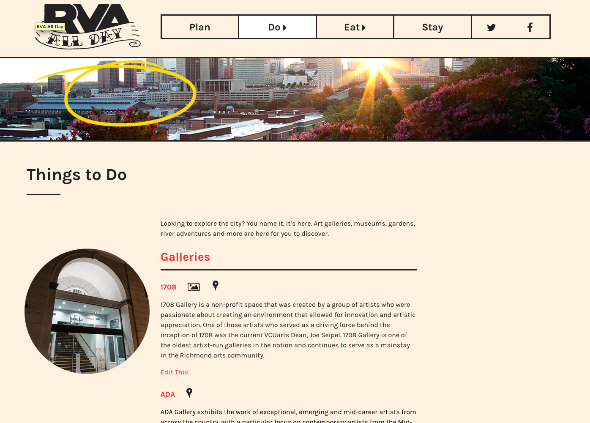
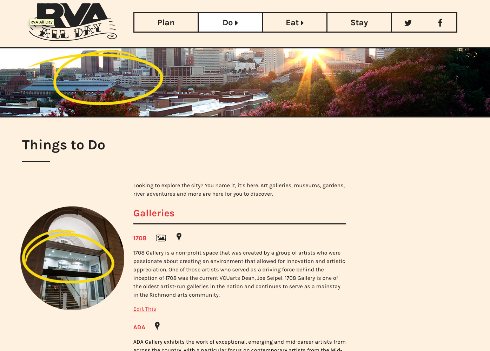
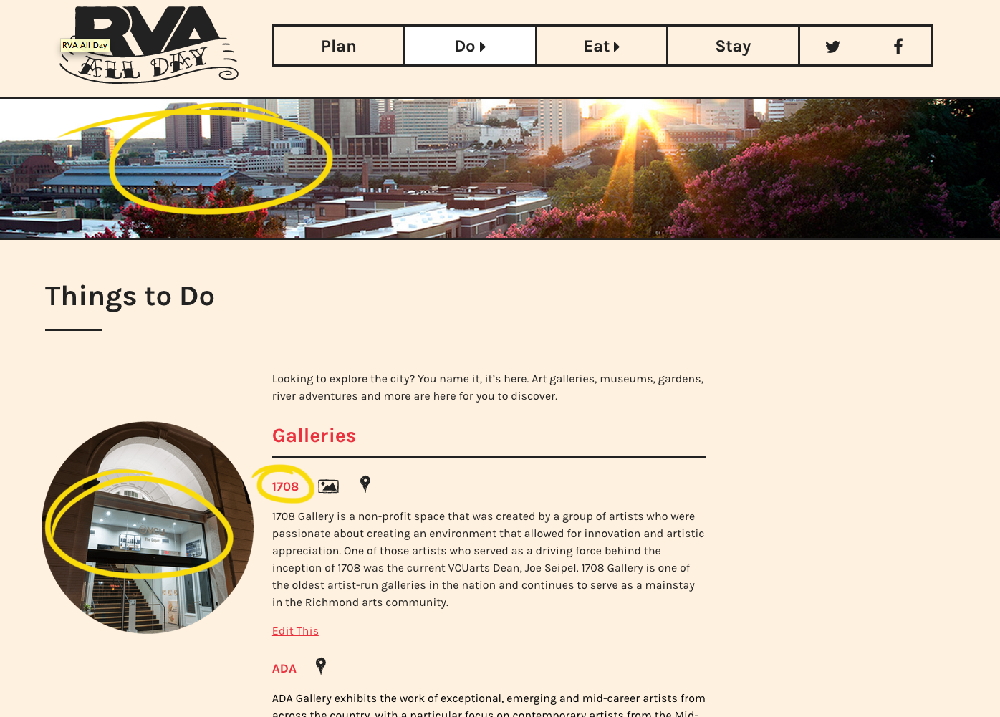
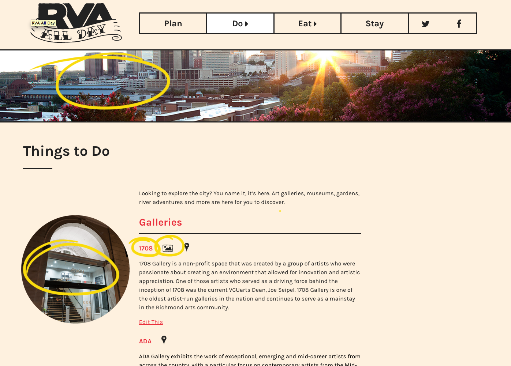

ACF is a WordPress plugin that extends the functionality of custom fields and allows for more dynamic content that would be difficult or impossible with the default editor.
What do you do if you need page specific banners?
Category thumbnails?
Optional external link?
Optional image lightbox?
Optional google maps?
http://www.advancedcustomfields.com/resources/wysiwyg-editor/
This is all built on a few basic concepts
Variables, Arrays, and Functions
Very much like a useful pot.
are variable inception
our digital work horses
With these you can do anything.
Solves most everything